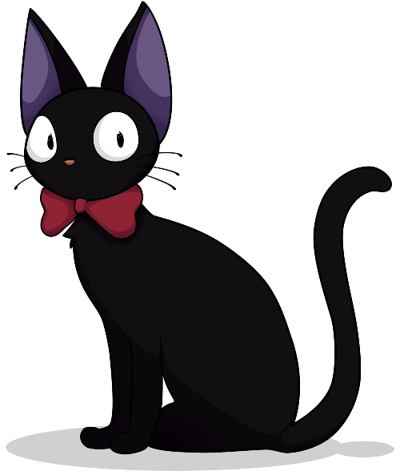

OST Merry-Go-Round of Life / 人生のメリーゴーランド 브라우저에서 <audio>를 지원하지 않습니다. 하울의 움직이는 성 ost가 반복재생 됩니다. 생명의 이름 / いのちの名前 브라우저에서 <audio>를 지원하지 않습니다. 센과 치히로의 행방불명 ost가 반복재생 됩니다.  벼랑 위의 포뇨 / 崖の上のポニョ 브라우저에서 <audio>를 지원하지 않습니다. 벼랑 위의 포뇨 ost가 반복재생 됩니다.